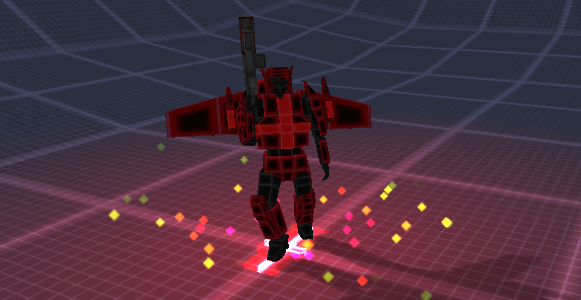

|
| CAT with full health and full health buffer |
 |
| CAT with almost no health |
| CAT with full health but empty health buffer |
 |
| CAT with overflowing health buffer |
|  |
| CAT using etherboard |
CATs are the physical manifestations of the Reds and Blues that can capture
zones, tag enemies, shoot and be destroyed.
The Reds and Blues have the following basic properties:
|
Players start with 75 health points. At least 25% health is needed to manifest as a CAT. Health is lost if a player takes more damage than the health buffer can absorb. To regain health, players can either change back into Etherform and rest in a zone owned by their team or inflict damage on an enemy CAT. If you damage another CAT, 50% of the inflicted damage is returned to you first as health and then put into your health buffer, possibly overflowing it.
Players have a health buffer that constantly re-/degenerates to 25 points. Damage first hits the health buffer before affecting a player's health. The health buffer can overflow if players inflict enough damage on enemies.
A CAT needs energy to power its armor and fire its weapons. The energy consumed when firing a shot from a weapon is restored if the shot hits an enemy.
Every CAT has energy-based armor that can absorb up to 50% damage if the CAT has full energy. The damage absorbed by the armor decreases in a linear fashion with decreased energy.
By holding down the left control key, CATs can trade agility for speed by using the Etherboard to ride the ether.
Players are tagged when they take damage from an enemy. Tagged enemies appear on the HUD.
By pressing TAB, players manifested as CAT can dissolve their physical bodies at any time.
| W A S D | Movement |
| Mouse X & Y axis | Look |
| Mouse Z axis (wheel) | Zoom |
| Left mouse button | Fire equipped weapon |
| Right mouse button | Fire disc |
| Middle mouse button | Throw grenade |
| Left shift + middle mouse button | Throw grenade at full force |
| Tab | Return immediately to Etherform |
| Left shift | Walk slowly |
| Left control | Use Etherboard |
| 1 | Equip Trident |
| 2 | Equip primary weapon |
| q | Toggle equipped weapon |
| y | Show bigger minimap |